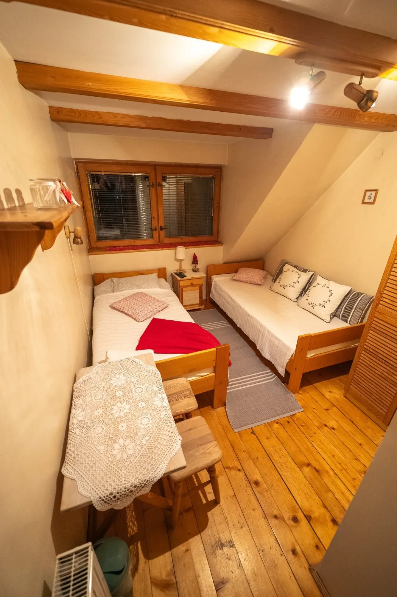
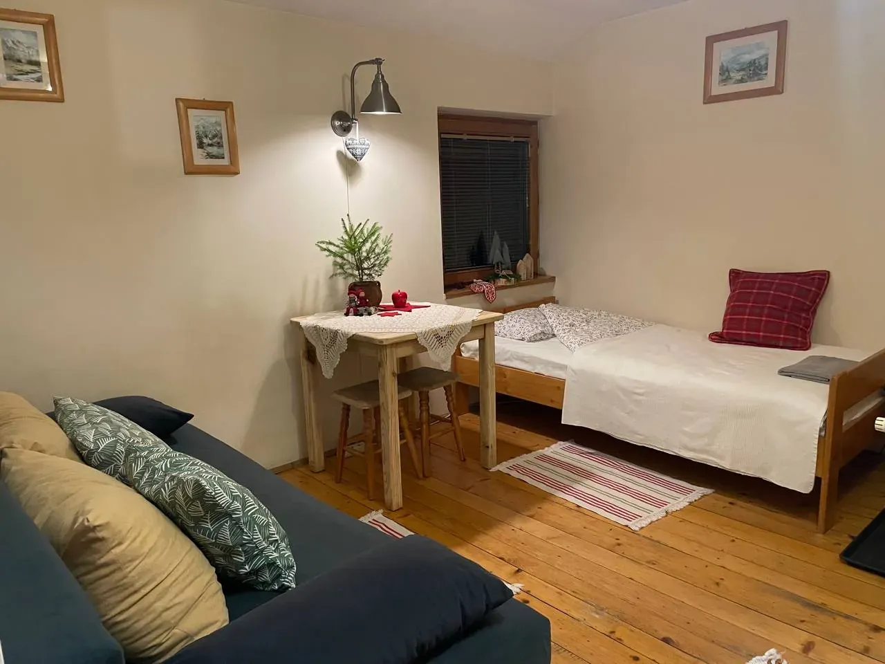

Willa Storczyk · Droga na Bystre 1
Sześć pokoi dla 2, 3 i 4 osób w drewnianej willi. Auto zostawiasz na posesji, przystanek masz 30 metrów dalej.
Willa Storczyk to sześć pokoi przy Drodze na Bystre, około 20 minut spacerem od Krupówek. Każdy pokój ma prywatną łazienkę, na korytarzu jest wspólny aneks kuchenny, a samochód zostawiasz na naszym parkingu bez dopłaty. Poniżej znajdziesz konkretne ceny, opis każdego typu pokoju i to, co dokładnie mieści się w stawce.

Pokój 2-osobowy
od 100 zł / os. / doba
Jeden z pokoi 2-osobowych ma balkon, a łazienkę na korytarzu. Powiedz przy rezerwacji, który wolisz.

Pokój 2/3-osobowy
od 100 zł / os. / doba

Pokój 3/4-osobowy
od 100 zł / os. / doba
Najczęściej wybierany przez rodziny z dziećmi.
Stawka jest podawana od osoby za dobę i zależy od terminu, liczby osób w pokoju oraz długości pobytu. Przy dłuższych pobytach i mniejszym obłożeniu pokoju cena za osobę jest niższa.
| Okres | Kiedy | Cena od |
|---|---|---|
| Poza sezonem | kwiecień – czerwiec, wrzesień – listopadbez długich weekendów | 100 złos. / doba |
| Sezon | wakacje, ferie zimowe, długie weekendyoraz sezon narciarski | 120 złos. / doba |
| Szczyt sezonu | Boże Narodzenie, Sylwester, Nowy Rokoraz Wielkanoc | 150 złos. / doba |
Podane stawki to ceny wyjściowe. Dokładną kwotę za cały pobyt podajemy po podaniu daty przyjazdu, daty wyjazdu i liczby osób. Zadzwoń albo napisz, odpowiadamy tego samego dnia.
Napisz datę przyjazdu, datę wyjazdu i liczbę osób, a odeślemy konkretną cenę za cały pobyt. Rezerwujesz bezpośrednio u gospodarzy, bez prowizji dla pośredników.
Cała okolica Krupówek to płatna strefa parkowania, a w sezonie miejsce trzeba złapać rano. U nas zostawiasz auto na posesji za darmo i na Krupówki jedziesz autobusem w 7 minut. Więcej o tym w naszym poradniku o parkingach w Zakopanem.
Droga na Bystre 1, po wschodniej stronie Zakopanego. Spokojna okolica, ale z przystankiem komunikacji miejskiej praktycznie pod nosem, więc nie potrzebujesz auta żeby poruszać się po mieście.
Na dwa sposoby: zadzwoń pod 607 312 972 albo wyślij formularz zapytania.
Ceny zaczynają się od 100 zł od osoby za dobę poza sezonem, od 120 zł w wakacje i ferie oraz od 150 zł w okresie świąteczno-noworocznym. Stawka zależy od liczby osób i długości pobytu. Taksa klimatyczna, Wi-Fi i parking są wliczone.
Tak, poza jednym pokojem 2-osobowym z balkonem, który korzysta z łazienki na korytarzu. Wszystkie pozostałe pokoje mają własną łazienkę z prysznicem.
Tak. Parking znajduje się na terenie posesji i jest bezpłatny dla Gości, bez limitu miejsc i bez rezerwacji. To istotne, bo parkowanie w centrum Zakopanego jest płatne i trudno o miejsce w sezonie.
Przystanek komunikacji miejskiej jest 30 metrów od willi. Stamtąd dojedziesz na Krupówki w 7 minut, a rozkłady i ceny biletów opisaliśmy w przewodniku po komunikacji miejskiej.
Nie. Taksa klimatyczna jest wliczona w podaną cenę. Nie ma żadnych dopłat doliczanych na miejscu.
Tak, na korytarzu znajduje się wspólny aneks kuchenny dostępny dla wszystkich Gości. Śniadania nie są wliczone w cenę, ale w sąsiednim budynku działa cukiernia Góralskie Praliny, gdzie śniadanie kosztuje od 20 do 40 zł od osoby.
To zależy od wielkości i zachowania psa. Prosimy o kontakt telefoniczny, ustalimy to indywidualnie.
Zebraliśmy praktyczne informacje o okolicy, z których korzystają nasi Goście: